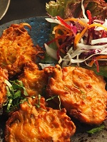
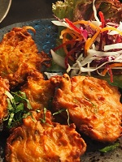

Cooking for Students

 

Indian food consists of a wide variety of regional cuisines native to the Indian subcontinent. Given the range of climate, culture, ethnic groups, and occupations, these cuisines vary substantially from each other. Each uses locally available spices, herbs, vegetables, and fruits.
Indian food is also heavily influenced by religion, in particular Hindu and traditions. Middle Eastern and Central Asian influences have also occurred on North Indian cuisine from the years of Mughal rule. Indian cuisine is still evolving, as a result of the nation's cultural interactions with other societies.
Historical incidents such as foreign invasions, trade relations, and colonialism have played a role in introducing certain foods to this country. For example, potato was brought to India by the Portuguese.
Indian cuisine has shaped the history of international relations; the spice trade between India and Europe was the primary catalyst for Europe's Age of Discovery. Spices were bought from India and traded around Europe and Asia.
Indian cuisine has influenced other cuisines across the world, especially those from Europe, the Middle East, North Africa, sub-Saharan Africa, Southeast Asia, the British Isles, Fiji, and the Caribbean.